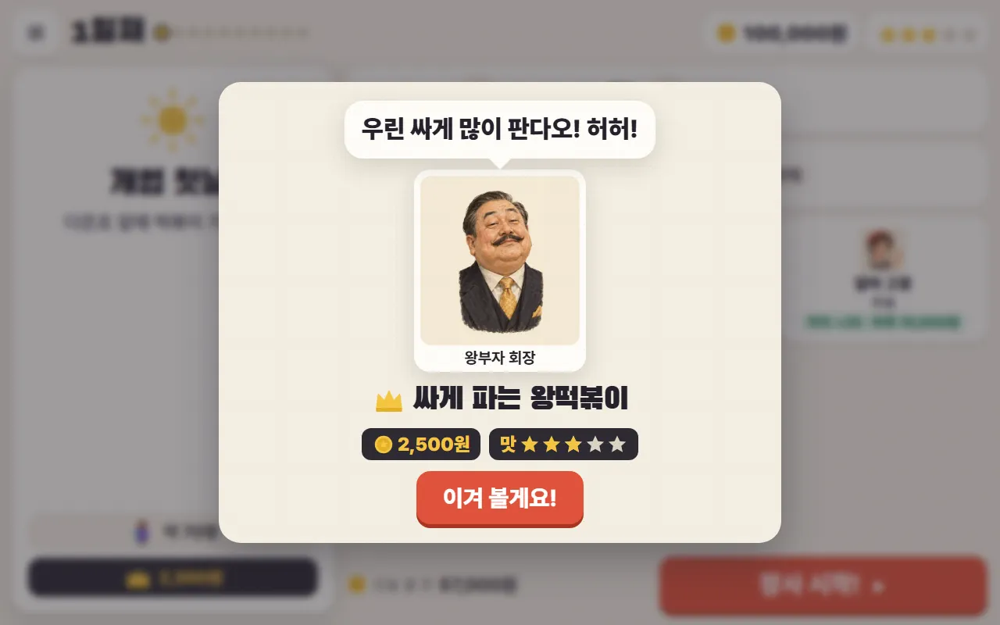
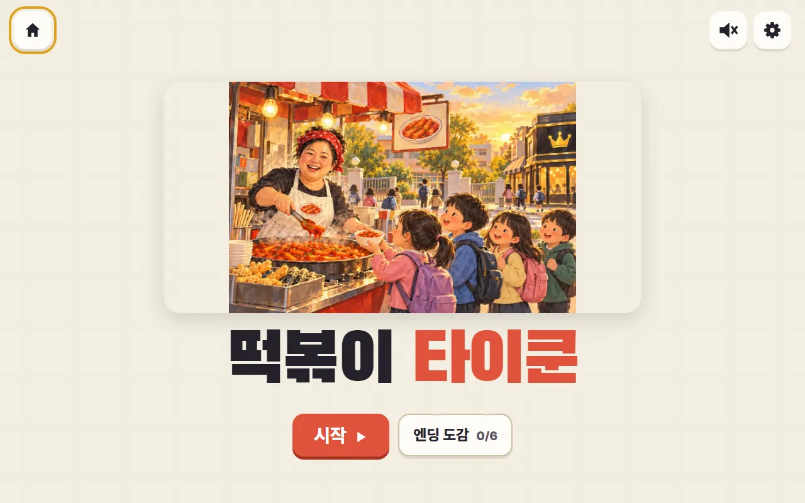
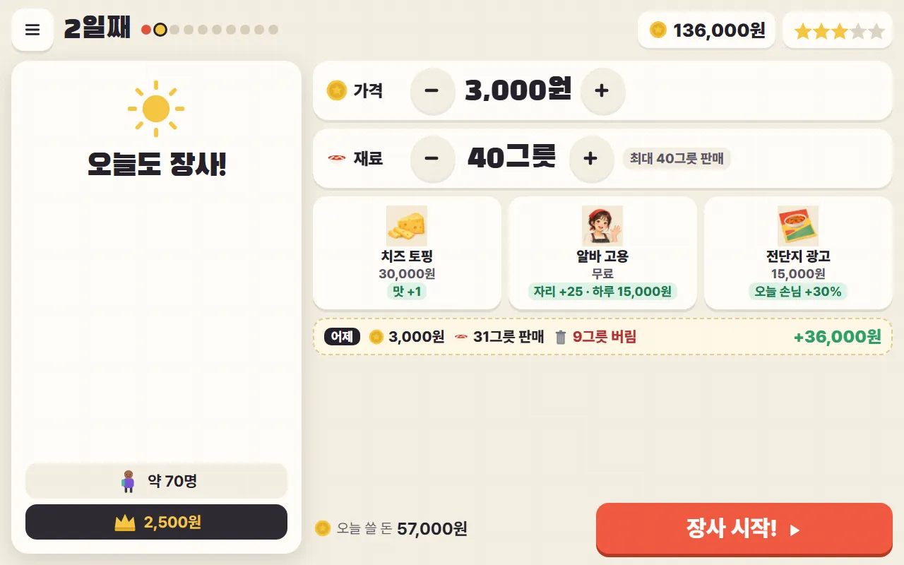
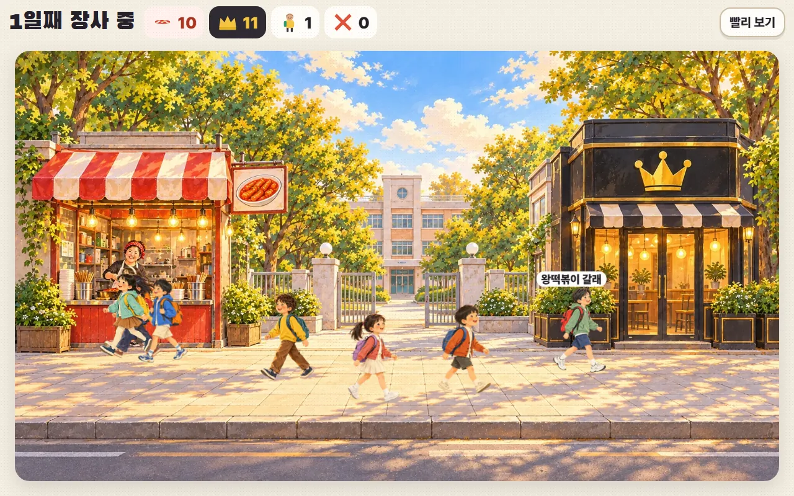
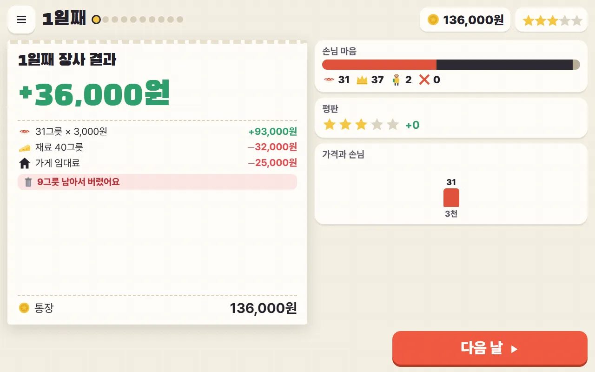
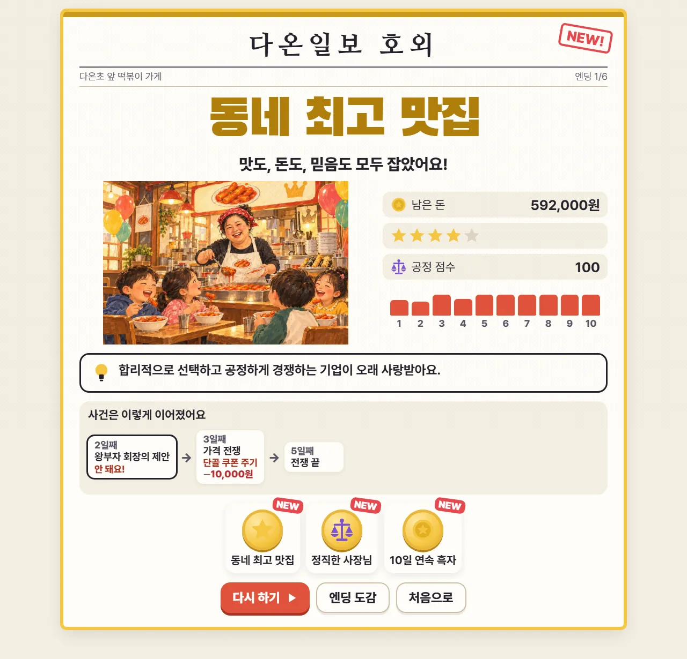
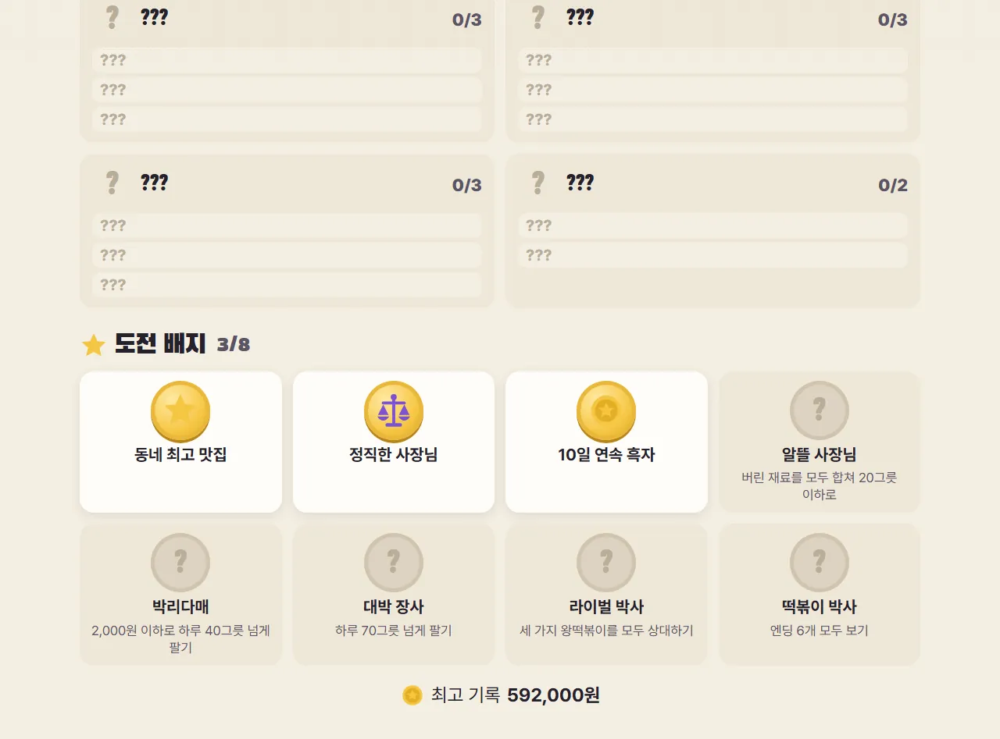

1231
오늘의 라이벌
첫날, 이번 판의 왕떡볶이를 소개해요.
- 1회장님의 한마디
- 2이번 판 왕떡볶이
- 3가격과 맛
학교 앞 떡볶이 가게 사장님이 되어 10일 동안 장사해 보자!

가격과 재료를 잘 정해 돈을 벌고, 손님의 믿음(별)도 지키며 10일 장사를 마치기!
👑길 건너 "왕떡볶이"와 경쟁해요. 왕떡볶이는 판마다 성격이 달라요. 우리 가게가 이틀 연속 크게 앞서면 값을 내리거나 신메뉴를 내놓아요.

123첫날, 이번 판의 왕떡볶이를 소개해요.

123456789오늘 소식을 보고 가격·재료·투자를 정해요.

12345값을 따지는 아이, 맛을 따지는 아이, 왕떡볶이 단골이 있어요. 가게 옆 말풍선에 고른 이유가 나와요.

12345영수증으로 오늘 번 돈과 쓴 돈을 확인해요.
가끔 누군가 찾아와 제안해요. 선택은 며칠 뒤 다른 사건으로 이어질 수 있어요.
왼쪽: 제안 · 오른쪽: 며칠 뒤 이어진 사건

123410일이 끝나면 엔딩이 나와요. 공정 점수는 이때 처음 보여요. 사건이 어떻게 이어졌는지도 볼 수 있어요.

이 칸은 수업을 준비하는 선생님을 위한 내용이에요.
6학년 사회 · 우리나라의 경제 — 가계와 기업의 합리적 선택, 시장에서 가격이 정해지는 원리, 공정한 경쟁(담합·과장 광고·원산지 표시), 소비자의 권리